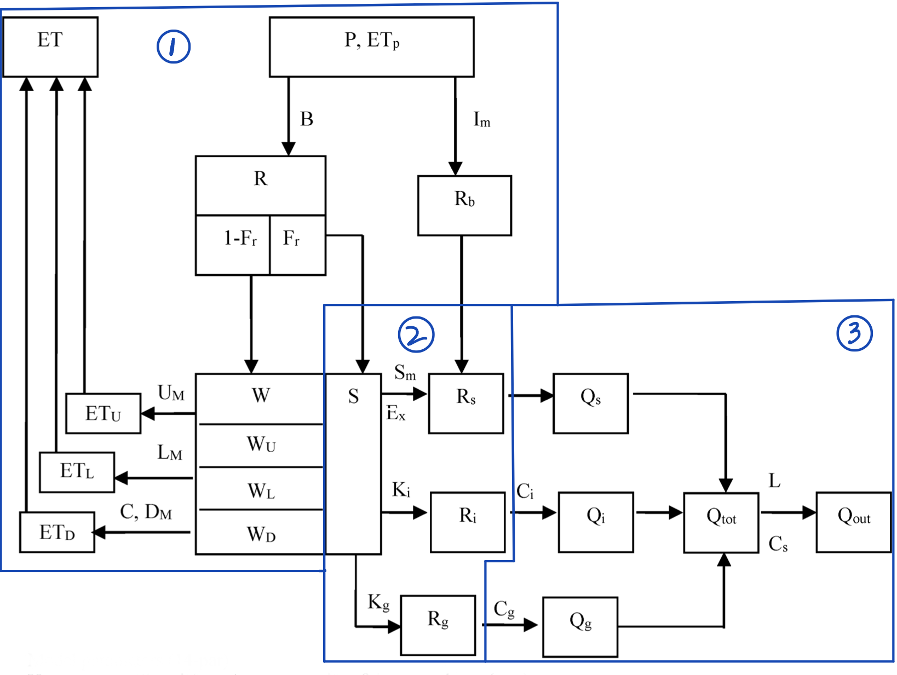

XinAnJiang (XAJ) Model¶
XinAnJiang (XAJ) model is one of the most famous conceptual hydrological models, especially popular in Southern China. It was developed by Prof. Renjun Zhao and has been widely used for rainfall-runoff simulation and flood forecasting.
Model Structure¶
The XAJ model consists of three main components:
- Evapotranspiration Module: Three-layer evaporation model
- Runoff Generation Module: Soil moisture accounting and runoff calculation
- Flow Routing Module: Unit hydrograph and flow routing

API Reference¶
Copyright (c) 2023-2024 Wenyu Ouyang. All rights reserved.
calculate_evap(lm, c, wu0, wl0, prcp, pet)
¶
Three-layers evaporation model from "Watershed Hydrologic Simulation" written by Prof. RenJun Zhao.
The book is Chinese, and its name is 《流域水文模拟》; The three-layers evaporation model is described in Page 76; The method is same with that in Page 22-23 in "Hydrologic Forecasting (5-th version)" written by Prof. Weimin Bao. This book's Chinese name is 《水文预报》
Parameters:
| Name | Type | Description | Default |
|---|---|---|---|
lm |
Average soil moisture storage capacity of lower layer |
required | |
c |
Coefficient of deep layer |
required | |
wu0 |
Initial soil moisture of upper layer; update in each time step |
required | |
wl0 |
Initial soil moisture of lower layer; update in each time step |
required | |
prcp |
Basin mean precipitation |
required | |
pet |
Potential evapotranspiration |
required |
Returns:
| Type | Description |
|---|---|
tuple[np.array, np.array, np.array] |
eu/el/ed are evaporation from upper/lower/deeper layer, respectively |
Source code in hydromodel/models/xaj.py
def calculate_evap(
lm, c, wu0, wl0, prcp, pet
) -> tuple[np.array, np.array, np.array]:
"""Three-layers evaporation model from "Watershed Hydrologic Simulation" written by Prof. RenJun Zhao.
The book is Chinese, and its name is 《流域水文模拟》;
The three-layers evaporation model is described in Page 76;
The method is same with that in Page 22-23 in "Hydrologic Forecasting (5-th version)" written by Prof. Weimin Bao.
This book's Chinese name is 《水文预报》
Args:
lm: Average soil moisture storage capacity of lower layer
c: Coefficient of deep layer
wu0: Initial soil moisture of upper layer; update in each time step
wl0: Initial soil moisture of lower layer; update in each time step
prcp: Basin mean precipitation
pet: Potential evapotranspiration
Returns:
tuple[np.array, np.array, np.array]: eu/el/ed are evaporation from upper/lower/deeper layer, respectively
"""
eu = np.where(wu0 + prcp >= pet, pet, wu0 + prcp)
ed = np.where(
(wl0 < c * lm) & (wl0 < c * (pet - eu)), c * (pet - eu) - wl0, 0.0
)
el = np.where(
wu0 + prcp >= pet,
0.0,
np.where(
wl0 >= c * lm,
(pet - eu) * wl0 / lm,
np.where(wl0 >= c * (pet - eu), c * (pet - eu), wl0),
),
)
return eu, el, ed
calculate_prcp_runoff(b, im, wm, w0, pe)
¶
Calculates the amount of runoff generated from rainfall after entering the underlying surface.
Same in "Watershed Hydrologic Simulation" and "Hydrologic Forecasting (5-th version)"
Parameters:
| Name | Type | Description | Default |
|---|---|---|---|
b |
B; exponent coefficient |
required | |
im |
IMP; imperiousness coefficient |
required | |
wm |
Average soil moisture storage capacity |
required | |
w0 |
Initial soil moisture |
required | |
pe |
Net precipitation |
required |
Returns:
| Type | Description |
|---|---|
tuple[np.array, np.array] |
r -- runoff; r_im -- runoff of impervious part |
Source code in hydromodel/models/xaj.py
def calculate_prcp_runoff(b, im, wm, w0, pe) -> tuple[np.array, np.array]:
"""Calculates the amount of runoff generated from rainfall after entering the underlying surface.
Same in "Watershed Hydrologic Simulation" and "Hydrologic Forecasting (5-th version)"
Args:
b: B; exponent coefficient
im: IMP; imperiousness coefficient
wm: Average soil moisture storage capacity
w0: Initial soil moisture
pe: Net precipitation
Returns:
tuple[np.array, np.array]: r -- runoff; r_im -- runoff of impervious part
"""
# Validate parameters before calculation to avoid NaN/complex results.
# w0 must not exceed wm (initial storage cannot exceed capacity),
# and b must be non-negative (curve exponent constraint).
w0_arr = np.asarray(w0, dtype=float)
wm_arr = np.asarray(wm, dtype=float)
b_arr = np.asarray(b, dtype=float)
if (w0_arr > wm_arr).any():
raise ArithmeticError("Please check if w0>wm or b is a negative value!")
if (b_arr < 0).any():
raise ArithmeticError("Please check if w0>wm or b is a negative value!")
wmm = wm_arr * (1.0 + b_arr)
a = wmm * (1.0 - (1.0 - w0_arr / wm_arr) ** (1.0 / (1.0 + b_arr)))
r_cal = np.where(
pe > 0.0,
np.where(
pe + a < wmm,
# 1e-5 is a precision which we set to guarantee float's calculation is correct
pe
- (wm - w0)
+ wm * (1.0 - np.minimum(a + pe, wmm) / wmm) ** (1.0 + b),
pe - (wm - w0),
),
np.full(pe.shape, 0.0),
)
r = np.maximum(r_cal, 0.0)
# separate impervious part with the other
r_im_cal = pe * im
r_im = np.maximum(r_im_cal, 0.0)
return r, r_im
calculate_w_storage(um, lm, dm, wu0, wl0, wd0, eu, el, ed, pe, r)
¶
Update the soil moisture values of the three layers.
According to the equation 2.60 in the book《水文预报》
Parameters:
| Name | Type | Description | Default |
|---|---|---|---|
um |
Average soil moisture storage capacity of the upper layer |
required | |
lm |
Average soil moisture storage capacity of the lower layer |
required | |
dm |
Average soil moisture storage capacity of the deep layer |
required | |
wu0 |
Initial values of soil moisture in upper layer |
required | |
wl0 |
Initial values of soil moisture in lower layer |
required | |
wd0 |
Initial values of soil moisture in deep layer |
required | |
eu |
Evaporation of the upper layer; it isn't used in this function |
required | |
el |
Evaporation of the lower layer |
required | |
ed |
Evaporation of the deep layer |
required | |
pe |
Net precipitation; it is able to be negative value in this function |
required | |
r |
Runoff |
required |
Returns:
| Type | Description |
|---|---|
tuple[np.array, np.array, np.array] |
wu,wl,wd -- soil moisture in upper, lower and deep layer |
Source code in hydromodel/models/xaj.py
def calculate_w_storage(
um, lm, dm, wu0, wl0, wd0, eu, el, ed, pe, r
) -> tuple[np.array, np.array, np.array]:
"""Update the soil moisture values of the three layers.
According to the equation 2.60 in the book《水文预报》
Args:
um: Average soil moisture storage capacity of the upper layer
lm: Average soil moisture storage capacity of the lower layer
dm: Average soil moisture storage capacity of the deep layer
wu0: Initial values of soil moisture in upper layer
wl0: Initial values of soil moisture in lower layer
wd0: Initial values of soil moisture in deep layer
eu: Evaporation of the upper layer; it isn't used in this function
el: Evaporation of the lower layer
ed: Evaporation of the deep layer
pe: Net precipitation; it is able to be negative value in this function
r: Runoff
Returns:
tuple[np.array, np.array, np.array]: wu,wl,wd -- soil moisture in upper, lower and deep layer
"""
# pe>0: the upper soil moisture was added firstly, then lower layer, and the final is deep layer
# pe<=0: no additional water, just remove evapotranspiration,
# but note the case: e >= p > 0
# (1) if wu0 + p > e, then e = eu (2) else, wu must be zero
wu = np.where(
pe > 0.0,
np.where(wu0 + pe - r < um, wu0 + pe - r, um),
np.where(wu0 + pe > 0.0, wu0 + pe, 0.0),
)
# calculate wd before wl because it is easier to cal using where statement
wd = np.where(
pe > 0.0,
np.where(
wu0 + wl0 + pe - r > um + lm,
wu0 + wl0 + wd0 + pe - r - um - lm,
wd0,
),
wd0 - ed,
)
# water balance (equation 2.2 in Page 13, also shown in Page 23)
# if wu0 + p > e, then e = eu; else p must be used in upper layer,
# so no matter what the case is, el didn't include p, neither ed
wl = np.where(pe > 0.0, wu0 + wl0 + wd0 + pe - r - wu - wd, wl0 - el)
# the water storage should be in reasonable range
wu_ = np.clip(wu, a_min=0.0, a_max=um)
wl_ = np.clip(wl, a_min=0.0, a_max=lm)
wd_ = np.clip(wd, a_min=0.0, a_max=dm)
return wu_, wl_, wd_
generation(p_and_e, k, b, im, um, lm, dm, c, wu0=None, wl0=None, wd0=None)
¶
Single-step runoff generation in XAJ.
Parameters:
| Name | Type | Description | Default |
|---|---|---|---|
p_and_e |
Precipitation and potential evapotranspiration |
required | |
k |
Ratio of potential evapotranspiration to reference crop evaporation |
required | |
b |
Exponent parameter |
required | |
um |
Average soil moisture storage capacity of the upper layer |
required | |
lm |
Average soil moisture storage capacity of the lower layer |
required | |
dm |
Average soil moisture storage capacity of the deep layer |
required | |
im |
Impermeability coefficient |
required | |
c |
Coefficient of deep layer |
required | |
wu0 |
Initial values of soil moisture in upper layer |
None |
|
wl0 |
Initial values of soil moisture in lower layer |
None |
|
wd0 |
Initial values of soil moisture in deep layer |
None |
Returns:
| Type | Description |
|---|---|
tuple[tuple, tuple] |
(r, rim, e, pe), (wu, wl, wd); all variables are np.array |
Source code in hydromodel/models/xaj.py
def generation(
p_and_e, k, b, im, um, lm, dm, c, wu0=None, wl0=None, wd0=None
) -> tuple:
"""Single-step runoff generation in XAJ.
Args:
p_and_e: Precipitation and potential evapotranspiration
k: Ratio of potential evapotranspiration to reference crop evaporation
b: Exponent parameter
um: Average soil moisture storage capacity of the upper layer
lm: Average soil moisture storage capacity of the lower layer
dm: Average soil moisture storage capacity of the deep layer
im: Impermeability coefficient
c: Coefficient of deep layer
wu0: Initial values of soil moisture in upper layer
wl0: Initial values of soil moisture in lower layer
wd0: Initial values of soil moisture in deep layer
Returns:
tuple[tuple, tuple]: (r, rim, e, pe), (wu, wl, wd); all variables are np.array
"""
# make sure physical variables' value ranges are correct
prcp = np.maximum(p_and_e[:, 0], 0.0)
# get potential evapotranspiration
pet = np.maximum(p_and_e[:, 1] * k, 0.0)
# wm
wm = um + lm + dm
if wu0 is None:
# just an initial value
wu0 = 0.6 * um
if wl0 is None:
wl0 = 0.6 * lm
if wd0 is None:
wd0 = 0.6 * dm
w0_ = wu0 + wl0 + wd0
# w0 need locate in correct range so that following calculation could be right
# To make sure float data's calculation is correct, we'd better minus a precision (1e-5)
w0 = np.minimum(w0_, wm - 1e-5)
# Calculate the amount of evaporation from storage
eu, el, ed = calculate_evap(lm, c, wu0, wl0, prcp, pet)
e = eu + el + ed
# Calculate the runoff generated by net precipitation
prcp_difference = prcp - e
pe = np.maximum(prcp_difference, 0.0)
r, rim = calculate_prcp_runoff(b, im, wm, w0, pe)
# Update wu, wl, wd
wu, wl, wd = calculate_w_storage(
um, lm, dm, wu0, wl0, wd0, eu, el, ed, prcp_difference, r
)
return (r, rim, e, pe), (wu, wl, wd)
linear_reservoir(x, weight, last_y=None)
¶
Linear reservoir's release function.
Parameters:
| Name | Type | Description | Default |
|---|---|---|---|
x |
The input to the linear reservoir |
required | |
weight |
The coefficient of linear reservoir |
required | |
last_y |
The output of last period |
None |
Returns:
| Type | Description |
|---|---|
np.array |
One-step forward result |
Source code in hydromodel/models/xaj.py
def linear_reservoir(x, weight, last_y=None) -> np.array:
"""Linear reservoir's release function.
Args:
x: The input to the linear reservoir
weight: The coefficient of linear reservoir
last_y: The output of last period
Returns:
np.array: One-step forward result
"""
weight1 = 1 - weight
if last_y is None:
last_y = np.full(weight.shape, 0.001)
return weight * last_y + weight1 * x
sources(pe, r, sm, ex, ki, kg, s0=None, fr0=None, book='HF')
¶
Divide the runoff to different sources.
We use the initial version from the paper of the inventor of the XAJ model -- Prof. Renjun Zhao: "Analysis of parameters of the XinAnJiang model". Its Chinese name is <<新安江模型参数的分析>>, which could be found by searching in "Baidu Xueshu". The module's code can also be found in "Watershed Hydrologic Simulation" (WHS) Page 174. It is nearly same with that in "Hydrologic Forecasting" (HF) Page 148-149 We use the period average runoff as input and the unit period is day so we don't need to difference it as books show
We also provide code for formula from《水文预报》"Hydrologic Forecasting" (HF) the fifth version. Page 40-41 and 150-151; the procedures in 《工程水文学》"Engineering Hydrology" (EH) the third version are different we also provide. they are in the "sources5mm" function.
Parameters:
| Name | Type | Description | Default |
|---|---|---|---|
pe |
Net precipitation |
required | |
r |
Runoff from xaj_generation |
required | |
sm |
Areal mean free water capacity of the surface layer |
required | |
ex |
Exponent of the free water capacity curve |
required | |
ki |
Outflow coefficients of the free water storage to interflow relationships |
required | |
kg |
Outflow coefficients of the free water storage to groundwater relationships |
required | |
s0 |
Free water capacity of last period |
None |
|
fr0 |
Runoff area of last period |
None |
|
book |
The methods implementation to use ("HF" or "EH") |
'HF' |
Returns:
| Type | Description |
|---|---|
tuple[tuple, tuple] |
rs -- surface runoff; ri-- interflow runoff; rg -- groundwater runoff; s1 -- final free water capacity; all variables are numpy array |
Source code in hydromodel/models/xaj.py
def sources(pe, r, sm, ex, ki, kg, s0=None, fr0=None, book="HF") -> tuple:
"""Divide the runoff to different sources.
We use the initial version from the paper of the inventor of the XAJ model -- Prof. Renjun Zhao:
"Analysis of parameters of the XinAnJiang model". Its Chinese name is <<新安江模型参数的分析>>,
which could be found by searching in "Baidu Xueshu".
The module's code can also be found in "Watershed Hydrologic Simulation" (WHS) Page 174.
It is nearly same with that in "Hydrologic Forecasting" (HF) Page 148-149
We use the period average runoff as input and the unit period is day so we don't need to difference it as books show
We also provide code for formula from《水文预报》"Hydrologic Forecasting" (HF) the fifth version. Page 40-41 and 150-151;
the procedures in 《工程水文学》"Engineering Hydrology" (EH) the third version are different we also provide.
they are in the "sources5mm" function.
Args:
pe: Net precipitation
r: Runoff from xaj_generation
sm: Areal mean free water capacity of the surface layer
ex: Exponent of the free water capacity curve
ki: Outflow coefficients of the free water storage to interflow relationships
kg: Outflow coefficients of the free water storage to groundwater relationships
s0: Free water capacity of last period
fr0: Runoff area of last period
book: The methods implementation to use ("HF" or "EH")
Returns:
tuple[tuple, tuple]: rs -- surface runoff; ri-- interflow runoff; rg -- groundwater runoff;
s1 -- final free water capacity; all variables are numpy array
"""
# maximum free water storage capacity in a basin
ms = sm * (1.0 + ex)
if fr0 is None:
fr0 = 0.1
if s0 is None:
s0 = 0.5 * sm
# For free water storage, because s is related to fr and s0 and fr0 are both values of last period,
# we have to trans the initial value of s from last period to this one.
# both WHS（流域水文模拟）'s sample code and HF（水文预报） use s = fr0 * s0 / fr.
# I think they both think free water reservoir as a cubic tank. Its height is s and area of bottom rectangle is fr
# we will have a cubic tank with varying bottom and height,
# and fixed boundary (in HF sm is fixed) or none-fixed boundary (in EH smmf is not fixed)
# but notice r's list like" [1,0] which 1 is the 1st period's runoff and 0 is the 2nd period's runoff
# after 1st period, the s1 could not be zero, but in the 2nd period, fr=0, then we cannot set s=0, because some water still in the tank
# fr's formula could be found in Eq. 9 in "Analysis of parameters of the XinAnJiang model",
# Here our r doesn't include rim, so there is no need to remove rim from r; this is also the method in 《水文预报》（HF）
# NOTE: when r is 0, fr should be 0, however, s1 may not be zero and it still hold some water,
# then fr can not be 0, otherwise when fr is used as denominator it lead to error,
# so we have to deal with this case later, for example, when r=0, we cannot use pe * fr to replace r
# because fr get the value of last period, and it is not 0
fr = np.copy(fr0)
if any(fr == 0.0):
raise ArithmeticError(
"Please check fr's value, fr==0.0 will cause error in the next step!"
)
# r=0, then r/pe must be 0
fr_mask = r > 0.0
fr[fr_mask] = r[fr_mask] / pe[fr_mask]
if np.isnan(fr).any():
raise ArithmeticError("Please check pe's data! there may be 0.0")
# if fr=0, then we cannot get ss, but ss should not be 0, because s1 of last period may not be 0 and it still hold some water
ss = np.copy(s0)
# same initialization for s
s = np.copy(s0)
ss[fr_mask] = fr0[fr_mask] * s0[fr_mask] / fr[fr_mask]
if book == "HF":
ss = np.minimum(ss, sm)
au = ms * (1.0 - (1.0 - ss / sm) ** (1.0 / (1.0 + ex)))
if np.isnan(au).any():
raise ValueError(
"Error: NaN values detected. Try set clip function or check your data!!!"
)
# the first condition should be r > 0.0, when r=0, rs must be 0, fig 6-12 in EH or fig 5-4 in HF
# so we have to use "pe" carefully!!! when r>0.0, we use pe, otherwise we don't use it!!!
rs = np.full(r.shape, 0.0)
rs[fr_mask] = np.where(
pe[fr_mask] + au[fr_mask] < ms[fr_mask],
# equation 2-85 in HF
fr[fr_mask]
* (
pe[fr_mask]
- sm[fr_mask]
+ ss[fr_mask]
+ sm[fr_mask]
* (
(
1
- np.minimum(pe[fr_mask] + au[fr_mask], ms[fr_mask])
/ ms[fr_mask]
)
** (1 + ex[fr_mask])
)
),
# equation 2-86 in HF
fr[fr_mask] * (pe[fr_mask] + ss[fr_mask] - sm[fr_mask]),
)
rs = np.minimum(rs, r)
# ri's mask is not same as rs's, because last period's s may not be 0
# and in this time, ri and rg could be larger than 0
# we need firstly calculate the updated s, s's mask is same as fr_mask,
# when r==0, then s will be equal to last period's
# equation 2-87 in HF, some free water leave or save, so we update free water storage
s[fr_mask] = ss[fr_mask] + (r[fr_mask] - rs[fr_mask]) / fr[fr_mask]
s = np.minimum(s, sm)
if np.isnan(s).any():
raise ArithmeticError("Please check fr's data! there may be 0.0")
elif book == "EH":
# smmf should be with correpond with s
smmf = ms * (1 - (1 - fr) ** (1 / ex))
smf = smmf / (1 + ex)
ss = np.minimum(ss, smf)
au = smmf * (1 - (1 - ss / smf) ** (1 / (1 + ex)))
if np.isnan(au).any():
raise ValueError(
"Error: NaN values detected. Try set clip function or check your data!!!"
)
# rs's mask is keep with fr_mask
rs = np.full(r.shape, 0.0)
rs[fr_mask] = np.where(
pe[fr_mask] + au[fr_mask] < smmf[fr_mask],
(
pe[fr_mask]
- smf[fr_mask]
+ ss[fr_mask]
+ smf[fr_mask]
* (
1
- np.minimum(pe[fr_mask] + au[fr_mask], smmf[fr_mask])
/ smmf[fr_mask]
)
** (ex[fr_mask] + 1)
)
* fr[fr_mask],
(pe[fr_mask] + ss[fr_mask] - smf[fr_mask]) * fr[fr_mask],
)
rs = np.minimum(rs, r)
s[fr_mask] = ss[fr_mask] + (r[fr_mask] - rs[fr_mask]) / fr[fr_mask]
s = np.minimum(s, smf)
else:
raise ValueError("Please set book as 'HF' or 'EH'!")
# the following part is same for both HF and EH. Even the formula is different, but their meaning is same
# equation 2-88 in HF, next interflow and ground water will be released from the updated free water storage
# We use the period average runoff as input and the general unit period is day.
# Hence, we directly use ki and kg rather than ki_{Δt} in books.
ri = ki * s * fr
rg = kg * s * fr
# ri = np.where(s < PRECISION, np.full(r.shape, 0.0), ki * s * fr)
# rg = np.where(s < PRECISION, np.full(r.shape, 0.0), kg * s * fr)
# equation 2-89 in HF; although it looks different with that in WHS, they are actually same
# Finally, calculate the final free water storage
s1 = s * (1 - ki - kg)
# s1 = np.where(s1 < PRECISION, np.full(s1.shape, 0.0), s1)
return (rs, ri, rg), (s1, fr)
sources5mm(pe, runoff, sm, ex, ki, kg, s0=None, fr0=None, time_interval_hours=1, book='HF')
¶
Divide the runoff to different sources according to books -- 《水文预报》HF 5th edition and 《工程水文学》EH 3rd edition.
Parameters:
| Name | Type | Description | Default |
|---|---|---|---|
pe |
Net precipitation |
required | |
runoff |
Runoff from xaj_generation |
required | |
sm |
Areal mean free water capacity of the surface layer |
required | |
ex |
Exponent of the free water capacity curve |
required | |
ki |
Outflow coefficients of the free water storage to interflow relationships |
required | |
kg |
Outflow coefficients of the free water storage to groundwater relationships |
required | |
s0 |
Initial free water capacity |
None |
|
fr0 |
Initial area of generation |
None |
|
time_interval_hours |
由于Ki、Kg、Ci、Cg都是以24小时为时段长定义的,需根据时段长转换 |
1 |
|
book |
The methods in 《水文预报》HF 5th edition and 《工程水文学》EH 3rd edition are different, hence, both are provided, and the default is the former -- "ShuiWenYuBao"; the other one is "GongChengShuiWenXue" |
'HF' |
Returns:
| Type | Description |
|---|---|
tuple[tuple, tuple] |
rs_s -- surface runoff; rss_s-- interflow runoff; rg_s -- groundwater runoff; (fr_ds[-1], s_ds[-1]): state variables' final value; all variables are numpy array |
Source code in hydromodel/models/xaj.py
def sources5mm(
pe,
runoff,
sm,
ex,
ki,
kg,
s0=None,
fr0=None,
time_interval_hours=1,
book="HF",
):
"""Divide the runoff to different sources according to books -- 《水文预报》HF 5th edition and 《工程水文学》EH 3rd edition.
Args:
pe: Net precipitation
runoff: Runoff from xaj_generation
sm: Areal mean free water capacity of the surface layer
ex: Exponent of the free water capacity curve
ki: Outflow coefficients of the free water storage to interflow relationships
kg: Outflow coefficients of the free water storage to groundwater relationships
s0: Initial free water capacity
fr0: Initial area of generation
time_interval_hours: 由于Ki、Kg、Ci、Cg都是以24小时为时段长定义的,需根据时段长转换
book: The methods in 《水文预报》HF 5th edition and 《工程水文学》EH 3rd edition are different,
hence, both are provided, and the default is the former -- "ShuiWenYuBao";
the other one is "GongChengShuiWenXue"
Returns:
tuple[tuple, tuple]: rs_s -- surface runoff; rss_s-- interflow runoff; rg_s -- groundwater runoff;
(fr_ds[-1], s_ds[-1]): state variables' final value; all variables are numpy array
"""
# Convert Ki and Kg according to the time interval, as they are defined based on a 24-hour time interval
hours_per_day = 24
# Non-divisible case, add 1 to the period
residue_temp = hours_per_day % time_interval_hours
if residue_temp != 0:
residue_temp = 1
period_num_1d = int(hours_per_day / time_interval_hours) + residue_temp
# When kss+kg>1, the square root becomes a complex number during even root calculation, which will cause an error here.
# Also, be aware that the denominator may be 0, kss cannot be 0.
# Restrict the value of kss+kg.
kss_period = (1 - (1 - (ki + kg)) ** (1 / period_num_1d)) / (1 + kg / ki)
kg_period = kss_period * kg / ki
# Maximum free water storage capacity depth of the basin
smm = sm * (1 + ex)
if s0 is None:
s0 = 0.50 * sm
if fr0 is None:
fr0 = 0.1
# don't use np.where here, because it will cause some warning
fr = np.copy(fr0)
fr_mask = runoff > 0.0
fr[fr_mask] = runoff[fr_mask] / pe[fr_mask]
if np.all(runoff < 5):
n = 1
else:
# when modeling multiple basins, the number of divides is not the same, so we use the maximum number
r_max = np.max(runoff)
residue_temp = r_max % 5
if residue_temp != 0:
residue_temp = 1
n = int(r_max / 5) + residue_temp
rn = runoff / n
pen = pe / n
kss_d = (1 - (1 - (kss_period + kg_period)) ** (1 / n)) / (
1 + kg_period / kss_period
)
kg_d = kss_d * kg_period / kss_period
# kss_d = kss_period
# kg_d = kg_period
rs = np.full(runoff.shape, 0.0)
rss = np.full(runoff.shape, 0.0)
rg = np.full(runoff.shape, 0.0)
s_ds = []
fr_ds = []
s_ds.append(s0)
fr_ds.append(fr0)
for j in range(n):
fr0_d = fr_ds[j]
s0_d = s_ds[j]
# equation 5-32 in HF, but strange, cause each period, rn/pen is same, fr_d should be same
# fr_d = 1 - (1 - fr) ** (1 / n)
fr_d = fr
ss_d = np.copy(s0_d)
s_d = np.copy(s0_d)
s1_d = np.copy(s0_d)
ss_d[fr_mask] = fr0_d[fr_mask] * s0_d[fr_mask] / fr_d[fr_mask]
if book == "HF":
ss_d = np.minimum(ss_d, sm)
# ms = smm
au = smm * (1.0 - (1.0 - ss_d / sm) ** (1.0 / (1.0 + ex)))
if np.isnan(au).any():
raise ValueError(
"Error: NaN values detected. Try set clip function or check your data!!!"
)
rs_j = np.full(rn.shape, 0.0)
rs_j[fr_mask] = np.where(
pen[fr_mask] + au[fr_mask] < smm[fr_mask],
# equation 5-26 in HF
fr_d[fr_mask]
* (
pen[fr_mask]
- sm[fr_mask]
+ ss_d[fr_mask]
+ sm[fr_mask]
* (
(
1
- np.minimum(
pen[fr_mask] + au[fr_mask], smm[fr_mask]
)
/ smm[fr_mask]
)
** (1 + ex[fr_mask])
)
),
# equation 5-27 in HF
fr_d[fr_mask] * (pen[fr_mask] + ss_d[fr_mask] - sm[fr_mask]),
)
rs_j = np.minimum(rs_j, rn)
s_d[fr_mask] = (
ss_d[fr_mask] + (rn[fr_mask] - rs_j[fr_mask]) / fr_d[fr_mask]
)
s_d = np.minimum(s_d, sm)
elif book == "EH":
smmf = smm * (1 - (1 - fr_d) ** (1 / ex))
smf = smmf / (1 + ex)
ss_d = np.minimum(ss_d, smf)
au = smmf * (1 - (1 - ss_d / smf) ** (1 / (1 + ex)))
if np.isnan(au).any():
raise ValueError(
"Error: NaN values detected. Try set clip function or check your data!!!"
)
rs_j = np.full(rn.shape, 0.0)
rs_j[fr_mask] = np.where(
pen[fr_mask] + au[fr_mask] < smmf[fr_mask],
(
pen[fr_mask]
- smf[fr_mask]
+ ss_d[fr_mask]
+ smf[fr_mask]
* (
1
- np.minimum(pen[fr_mask] + au[fr_mask], smmf[fr_mask])
/ smmf[fr_mask]
)
** (ex[fr_mask] + 1)
)
* fr_d[fr_mask],
(pen[fr_mask] + ss_d[fr_mask] - smf[fr_mask]) * fr_d[fr_mask],
)
rs_j = np.minimum(rs_j, rn)
s_d[fr_mask] = (
ss_d[fr_mask] + (rn[fr_mask] - rs_j[fr_mask]) / fr_d[fr_mask]
)
s_d = np.minimum(s_d, smf)
else:
raise NotImplementedError(
"We don't have this implementation! Please chose 'HF' or 'EH'!!"
)
rss_j = s_d * kss_d * fr_d
rg_j = s_d * kg_d * fr_d
s1_d = s_d * (1 - kss_d - kg_d)
rs = rs + rs_j
rss = rss + rss_j
rg = rg + rg_j
# Assign s_d and fr_d to the arrays as initial values for the next segment
s_ds.append(s1_d)
fr_ds.append(fr_d)
return (rs, rss, rg), (s_ds[-1], fr_ds[-1])
uh_gamma(a, theta, len_uh=15)
¶
A simple two-parameter Gamma distribution as a unit-hydrograph to route instantaneous runoff from a hydrologic model.
The method comes from mizuRoute -- http://www.geosci-model-dev.net/9/2223/2016/
Parameters:
| Name | Type | Description | Default |
|---|---|---|---|
a |
Shape parameter |
required | |
theta |
Timescale parameter |
required | |
len_uh |
The time length of the unit hydrograph |
15 |
Returns:
| Type | Description |
|---|---|
torch.Tensor |
The unit hydrograph, dim: [seq, batch, feature] |
Source code in hydromodel/models/xaj.py
def uh_gamma(a, theta, len_uh=15):
"""A simple two-parameter Gamma distribution as a unit-hydrograph to route instantaneous runoff from a hydrologic model.
The method comes from mizuRoute -- http://www.geosci-model-dev.net/9/2223/2016/
Args:
a: Shape parameter
theta: Timescale parameter
len_uh: The time length of the unit hydrograph
Returns:
torch.Tensor: The unit hydrograph, dim: [seq, batch, feature]
"""
# dims of a: time_seq (same all time steps), batch, feature=1
m = a.shape
if len_uh > m[0]:
raise RuntimeError(
"length of unit hydrograph should be smaller than the whole length of input"
)
# aa > 0, here we set minimum 0.1 (min of a is 0, set when calling this func); First dimension of a is repeat
aa = np.maximum(0.0, a[0:len_uh, :, :]) + 0.1
# theta > 0, here set minimum 0.5
theta = np.maximum(0.0, theta[0:len_uh, :, :]) + 0.5
# len_f, batch, feature
t = np.expand_dims(
np.swapaxes(np.tile(np.arange(0.5, len_uh * 1.0), (m[1], 1)), 0, 1),
axis=-1,
)
denominator = gamma(aa) * (theta**aa)
# [len_f, m[1], m[2]]
w = 1 / denominator * (t ** (aa - 1)) * (np.exp(-t / theta))
w = w / w.sum(0) # scale to 1 for each UH
return w
xaj(p_and_e, params, return_state=False, warmup_length=365, return_warmup_states=False, normalized_params='auto', **kwargs)
¶
Run XAJ model.
Parameters:
| Name | Type | Description | Default |
|---|---|---|---|
p_and_e |
Prcp and pet; sequence-first (time is the first dim) 3-d np array: [time, basin, feature=2] |
required | |
params |
ndarray |
Parameters of XAJ model for basin(s); 2-dim variable -- [basin, parameter]: the parameters are B IM UM LM DM C SM EX KI KG A THETA CI CG (notice the sequence) |
required |
return_state |
If True, return state values, mainly for warmup periods |
False |
|
warmup_length |
Hydro models need a warm-up period to get good initial state values |
365 |
|
return_warmup_states |
If True, return initial states after warmup period (default: False) Returns a dict with keys for XAJ state variables |
False |
|
normalized_params |
Parameter format specification: - "auto": automatically detect if parameters are normalized (0-1) or original scale (default) - True: parameters are normalized (0-1 range), will be converted to original scale - False: parameters are already in original scale, use as-is |
'auto' |
|
**kwargs |
Additional keyword arguments: name: Now we provide two ways: "xaj" (route:recession constant + lag time) and "xaj_mz" (route:method from mizuRoute) source_type: Default is "sources" and it will call "sources" function; the other is "sources5mm", and we will divide the runoff to some <5mm pieces according to the books in this case source_book: When source_type is "sources5mm" there are two implementions for dividing sources, as the methods in "ShuiWenYuBao" and "GongChengShuiWenXue"" are different. Hence, both are provided, and the default is the former. kernel_size: The size of the kernel for the convolution operation, default is 15 periods if time_interval_hours is 1, it is 15 hours; if time_interval_hours is 24, it is 15 days It is the length of the unit hydrograph time_interval_hours: The time interval of the model, default is 1 hour, for daily case, it should be 24 this is only used when source_type is "sources5mm" initial_states (default: None): Dict to override specific initial state values after warmup, e.g., {"wu": 10, "wl": 15, "wd": 20, "s": 5} will set these initial state values for all basins after warmup Available states: "wu" (upper layer), "wl" (lower layer), "wd" (deep layer), "s" (free water storage), "fr" (interflow), "qi" (interflow), "qg" (groundwater) |
{} |
Returns:
| Type | Description | ||
|---|---|---|---|
tuple or np.ndarray |
Depends on return_state and return_warmup_states parameters:
|
Source code in hydromodel/models/xaj.py
def xaj(
p_and_e,
params: np.ndarray,
return_state=False,
warmup_length=365,
return_warmup_states=False,
normalized_params="auto",
**kwargs,
) -> Union[
tuple, # (q_sim, es) - standard case
np.ndarray, # This shouldn't happen but kept for legacy
tuple[
tuple, dict
], # ((q_sim, es), warmup_states) - return_state=False, return_warmup_states=True
]:
"""Run XAJ model.
Args:
p_and_e: Prcp and pet; sequence-first (time is the first dim) 3-d np array: [time, basin, feature=2]
params: Parameters of XAJ model for basin(s);
2-dim variable -- [basin, parameter]:
the parameters are B IM UM LM DM C SM EX KI KG A THETA CI CG (notice the sequence)
return_state: If True, return state values, mainly for warmup periods
warmup_length: Hydro models need a warm-up period to get good initial state values
return_warmup_states: If True, return initial states after warmup period (default: False)
Returns a dict with keys for XAJ state variables
normalized_params: Parameter format specification:
- "auto": automatically detect if parameters are normalized (0-1) or original scale (default)
- True: parameters are normalized (0-1 range), will be converted to original scale
- False: parameters are already in original scale, use as-is
**kwargs: Additional keyword arguments:
name: Now we provide two ways: "xaj" (route:recession constant + lag time) and "xaj_mz" (route:method from mizuRoute)
source_type: Default is "sources" and it will call "sources" function; the other is "sources5mm",
and we will divide the runoff to some <5mm pieces according to the books in this case
source_book: When source_type is "sources5mm" there are two implementions for dividing sources,
as the methods in "ShuiWenYuBao" and "GongChengShuiWenXue"" are different.
Hence, both are provided, and the default is the former.
kernel_size: The size of the kernel for the convolution operation, default is 15 periods
if time_interval_hours is 1, it is 15 hours; if time_interval_hours is 24, it is 15 days
It is the length of the unit hydrograph
time_interval_hours: The time interval of the model, default is 1 hour, for daily case, it should be 24
this is only used when source_type is "sources5mm"
initial_states (default: None): Dict to override specific initial state values after warmup,
e.g., {"wu": 10, "wl": 15, "wd": 20, "s": 5} will set these initial state values for all basins after warmup
Available states: "wu" (upper layer), "wl" (lower layer), "wd" (deep layer), "s" (free water storage),
"fr" (interflow), "qi" (interflow), "qg" (groundwater)
Returns:
tuple or np.ndarray: Depends on return_state and return_warmup_states parameters:
- return_state=False, return_warmup_states=False:
(q_sim, es) - streamflow and evapotranspiration
- return_state=False, return_warmup_states=True:
((q_sim, es), warmup_states_dict) where warmup_states_dict contains
XAJ state variables after warmup
- return_state=True, return_warmup_states=False:
(q_sim, es, wu, wl, wd, s, fr, qi, qg) - full state variables
- return_state=True, return_warmup_states=True:
(q_sim, es, wu, wl, wd, s, fr, qi, qg, warmup_states_dict)
"""
# default values for some function parameters
model_name = kwargs.get("name", "xaj")
source_type = kwargs.get("source_type", "sources")
source_book = kwargs.get("source_book", "HF")
kernel_size = kwargs.get("kernel_size", 15)
time_interval_hours = kwargs.get("time_interval_hours", 24)
model_param_dict = get_model_param_config(model_name, kwargs)
# params
param_ranges = model_param_dict["param_range"]
if model_name == "xaj":
route_method = "CSL"
elif model_name == "xaj_mz":
route_method = "MZ"
else:
raise NotImplementedError(
"We don't provide this route method now! Please use 'CSL' or 'MZ'!"
)
if np.isnan(params).any():
raise ValueError(
"Parameters contain NaN values. Please check your opt algorithm"
)
# Process parameters using unified parameter handling
processed_params = process_parameters(
params, param_ranges, normalized=normalized_params
)
# Extract individual parameters from processed array
k = processed_params[:, 0]
b = processed_params[:, 1]
im = processed_params[:, 2]
um = processed_params[:, 3]
lm = processed_params[:, 4]
dm = processed_params[:, 5]
c = processed_params[:, 6]
sm = processed_params[:, 7]
ex = processed_params[:, 8]
ki_ = processed_params[:, 9]
kg_ = processed_params[:, 10]
# ki+kg should be smaller than 1; if not, we scale them
ki = np.where(ki_ + kg_ < 1.0, ki_, (1.0 - PRECISION) / (ki_ + kg_) * ki_)
kg = np.where(ki_ + kg_ < 1.0, kg_, (1.0 - PRECISION) / (ki_ + kg_) * kg_)
if route_method == "CSL":
cs = processed_params[:, 11]
l = processed_params[:, 12]
elif route_method == "MZ":
# we will use routing method from mizuRoute -- http://www.geosci-model-dev.net/9/2223/2016/
a = processed_params[:, 11]
theta = processed_params[:, 12]
else:
raise NotImplementedError(
"We don't provide this route method now! Please use 'CSL' or 'MZ'!"
)
ci = processed_params[:, 13]
cg = processed_params[:, 14]
# initialize state values
if warmup_length > 0:
p_and_e_warmup = p_and_e[0:warmup_length, :, :]
# Remove initial_states from kwargs for warmup period to avoid applying override during warmup
warmup_kwargs = {
k: v for k, v in kwargs.items() if k != "initial_states"
}
_q, _e, *w0, s0, fr0, qi0, qg0 = xaj(
p_and_e_warmup,
params,
return_state=True,
warmup_length=0,
**warmup_kwargs,
)
else:
w0 = (0.5 * um, 0.5 * lm, 0.5 * dm)
s0 = 0.5 * sm
fr0 = np.full(ex.shape, 0.1)
qi0 = np.full(ci.shape, 0.1)
qg0 = np.full(cg.shape, 0.1)
# Apply initial state overrides if provided (only after warmup in main call)
# TODO: not fully tested yet
initial_states = kwargs.get("initial_states", None)
if initial_states is not None:
# Only apply initial_states when we just finished a warmup period or no warmup
if "wu" in initial_states:
w0 = (initial_states["wu"] * np.ones_like(w0[0]), w0[1], w0[2])
if "wl" in initial_states:
w0 = (w0[0], initial_states["wl"] * np.ones_like(w0[1]), w0[2])
if "wd" in initial_states:
w0 = (w0[0], w0[1], initial_states["wd"] * np.ones_like(w0[2]))
if "s" in initial_states:
s0.fill(initial_states["s"])
if "fr" in initial_states:
fr0.fill(initial_states["fr"])
if "qi" in initial_states:
qi0.fill(initial_states["qi"])
if "qg" in initial_states:
qg0.fill(initial_states["qg"])
# Save warmup states before applying overrides (for return_warmup_states)
# NOTE: this part must be set after the initial_states override, otherwise override initial states will be ignored
warmup_states = None
if return_warmup_states:
warmup_states = {
"wu": w0[0].copy(), # Upper layer moisture [basin] array
"wl": w0[1].copy(), # Lower layer moisture [basin] array
"wd": w0[2].copy(), # Deep layer moisture [basin] array
"s": s0.copy(), # Free water storage [basin] array
"fr": fr0.copy(), # Runoff fraction [basin] array
"qi": qi0.copy(), # Interflow [basin] array
"qg": qg0.copy(), # Groundwater flow [basin] array
}
# state_variables
inputs = p_and_e[warmup_length:, :, :]
runoff_ims_ = np.full(inputs.shape[:2], 0.0)
rss_ = np.full(inputs.shape[:2], 0.0)
ris_ = np.full(inputs.shape[:2], 0.0)
rgs_ = np.full(inputs.shape[:2], 0.0)
es_ = np.full(inputs.shape[:2], 0.0)
for i in range(inputs.shape[0]):
if i == 0:
(r, rim, e, pe), w = generation(
inputs[i, :, :], k, b, im, um, lm, dm, c, *w0
)
if source_type == "sources":
(rs, ri, rg), (s, fr) = sources(
pe, r, sm, ex, ki, kg, s0, fr0, book=source_book
)
elif source_type == "sources5mm":
(rs, ri, rg), (s, fr) = sources5mm(
pe,
r,
sm,
ex,
ki,
kg,
s0,
fr0,
time_interval_hours=time_interval_hours,
book=source_book,
)
else:
raise NotImplementedError("No such divide-sources method")
else:
(r, rim, e, pe), w = generation(
inputs[i, :, :], k, b, im, um, lm, dm, c, *w
)
if source_type == "sources":
(rs, ri, rg), (s, fr) = sources(
pe, r, sm, ex, ki, kg, s, fr, book=source_book
)
elif source_type == "sources5mm":
(rs, ri, rg), (s, fr) = sources5mm(
pe,
r,
sm,
ex,
ki,
kg,
s,
fr,
time_interval_hours=time_interval_hours,
book=source_book,
)
else:
raise NotImplementedError("No such divide-sources method")
# impevious part is pe * im
runoff_ims_[i, :] = rim
# so for non-imprvious part, the result should be corrected
rss_[i, :] = rs * (1 - im)
ris_[i, :] = ri * (1 - im)
rgs_[i, :] = rg * (1 - im)
es_[i, :] = e
# seq, batch, feature
runoff_im = np.expand_dims(runoff_ims_, axis=2)
rss = np.expand_dims(rss_, axis=2)
es = np.expand_dims(es_, axis=2)
qs = np.full(inputs.shape[:2], 0.0)
if route_method == "CSL":
qt = np.full(inputs.shape[:2], 0.0)
for i in range(inputs.shape[0]):
if i == 0:
qi = linear_reservoir(ris_[i], ci, qi0)
qg = linear_reservoir(rgs_[i], cg, qg0)
else:
qi = linear_reservoir(ris_[i], ci, qi)
qg = linear_reservoir(rgs_[i], cg, qg)
# Don't forget the runoff_im
qs_ = rss_[i] + runoff_ims_[i]
qt[i, :] = qs_ + qi + qg
for j in range(len(l)):
lag = int(l[j])
# Adjust lag if input is too short (for flood event data)
effective_lag = min(lag, inputs.shape[0] - 1)
for i in range(effective_lag):
qs[i, j] = qt[i, j]
for i in range(effective_lag, inputs.shape[0]):
qs[i, j] = (
cs[j] * qs[i - 1, j]
+ (1 - cs[j]) * qt[i - effective_lag, j]
)
elif route_method == "MZ":
rout_a = a.repeat(rss.shape[0]).reshape(rss.shape)
rout_b = theta.repeat(rss.shape[0]).reshape(rss.shape)
# Adjust kernel_size if input is too short (for flood event data)
effective_kernel_size = min(kernel_size, inputs.shape[0])
conv_uh = uh_gamma(rout_a, rout_b, effective_kernel_size)
qs_ = uh_conv(runoff_im + rss, conv_uh)
for i in range(inputs.shape[0]):
if i == 0:
qi = linear_reservoir(ris_[i], ci, qi0)
qg = linear_reservoir(rgs_[i], cg, qg0)
else:
qi = linear_reservoir(ris_[i], ci, qi)
qg = linear_reservoir(rgs_[i], cg, qg)
qs[i, :] = qs_[i, :, 0] + qi + qg
else:
raise NotImplementedError(
"We don't provide this route method now! Please use 'CS' or 'MZ'!"
)
# seq, batch, feature
q_sim = np.expand_dims(qs, axis=2)
if return_state:
result = (q_sim, es, *w, s, fr, qi, qg)
# If warmup states are requested, add them as the last element
if return_warmup_states and warmup_states is not None:
return result + (warmup_states,)
else:
return result
else:
# For non-state return, only return warmup states if specifically requested
if return_warmup_states and warmup_states is not None:
return (q_sim, es), warmup_states
else:
return q_sim, es